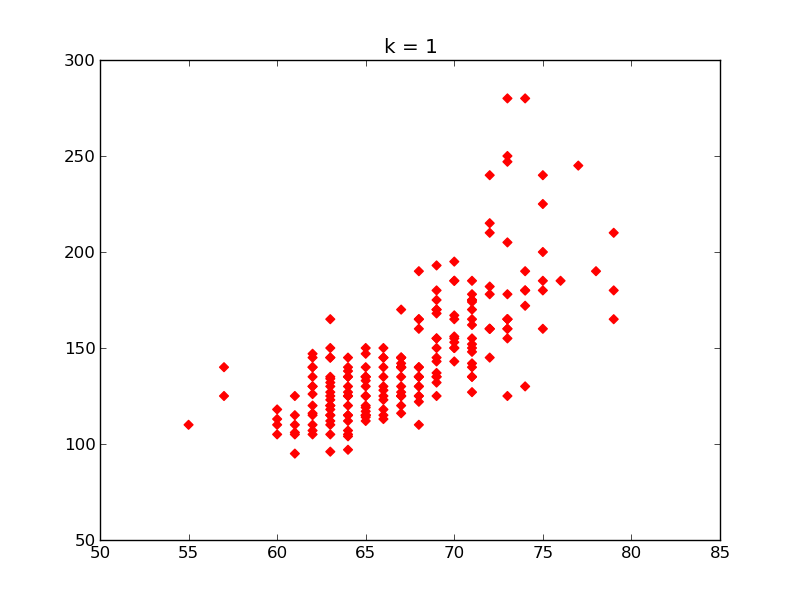
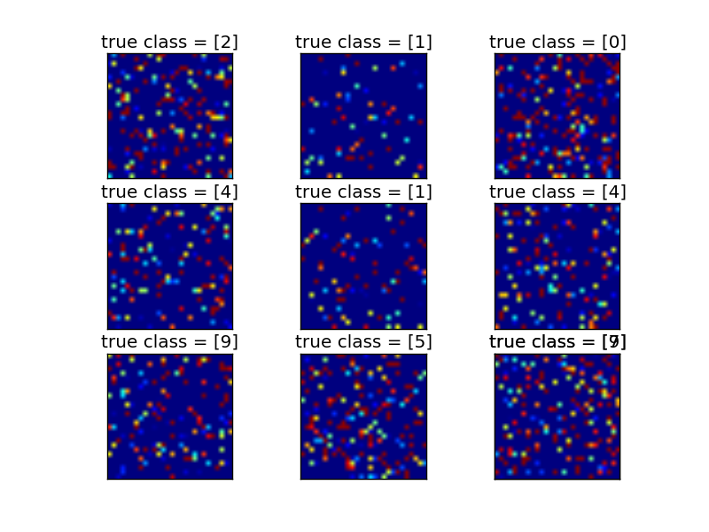
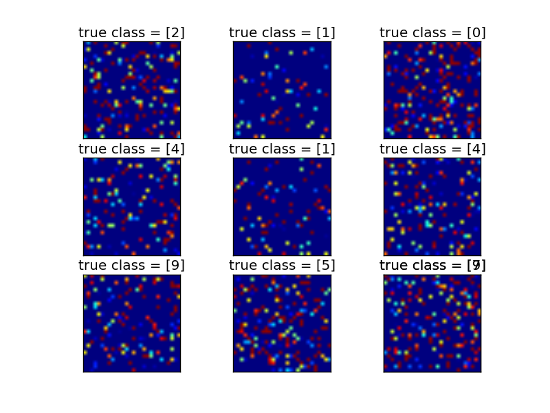
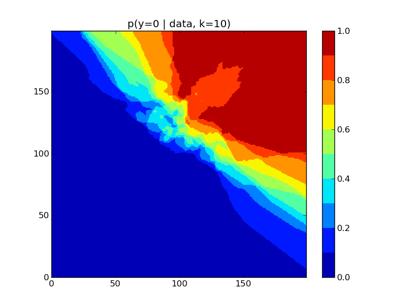
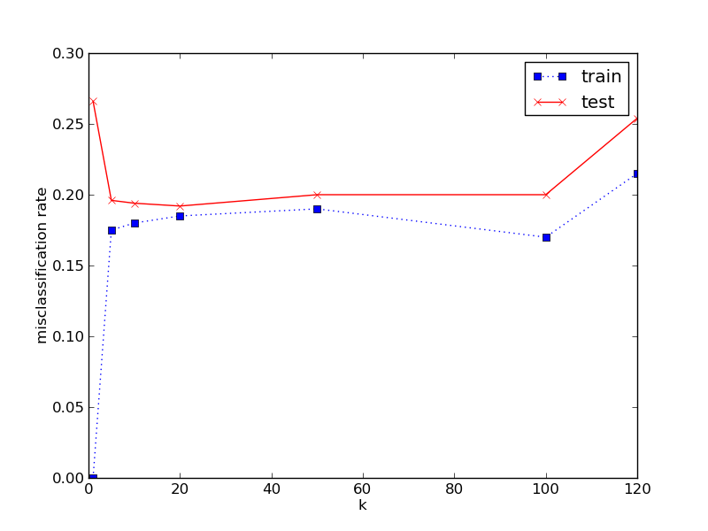
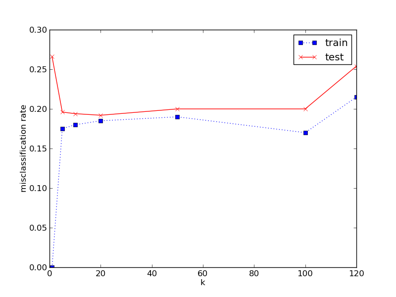
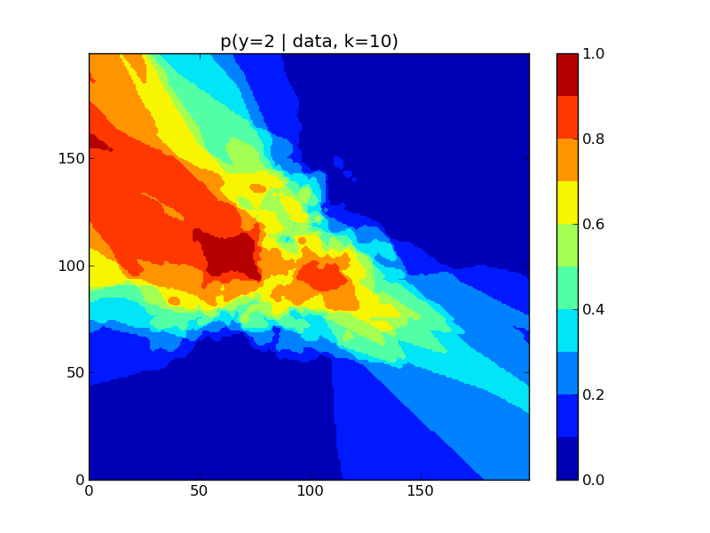
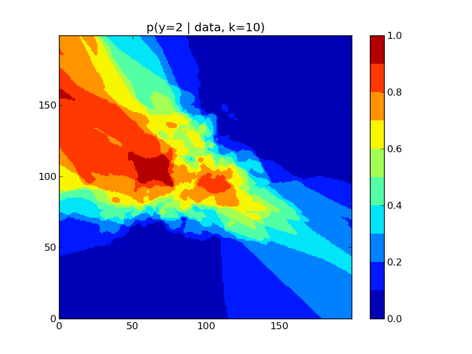
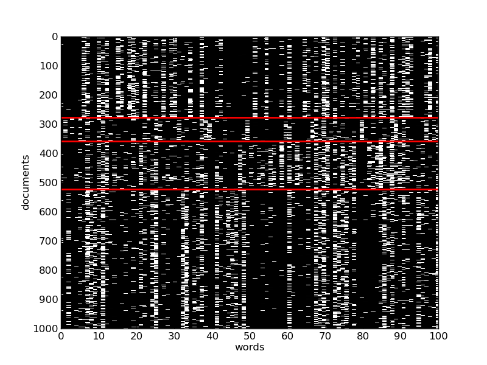
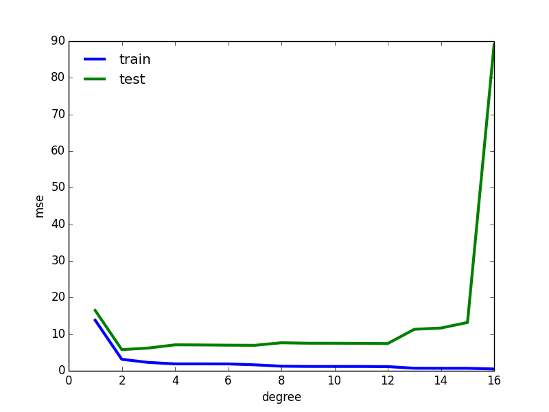

ch01¶
kmeansHeightWeight¶


#!/usr/bin/env python
from utils import load_mat
import pylab as pl
import numpy as np
from sklearn.cluster import KMeans
data = load_mat('heightWeight')
data = data['heightWeightData']
markers = 'Dox'
colors = 'rgb'
for i in range(3):
KM_model = KMeans(init='k-means++', n_clusters=i+1)
labels = KM_model.fit_predict(data[:, [1, 2]])
labels_unique = np.unique(labels)
fig = pl.figure(i)
for j in range(len(labels_unique)):
data_chosen = data[labels == labels_unique[j]]
pl.scatter(data_chosen[:, 1], data_chosen[:, 2],
marker=markers[j],
color=colors[j])
pl.title('k = %s' % (i+1))
pl.savefig('kmeansHeightWeight_%s.png' % (i+1))
pl.show()
shuffledDigitsDemo¶
 

#!/usr/bin/env python
from utils import load_mat
from matplotlib import pylab as pl
import numpy as np
data = load_mat('mnistAll')
mnist = data['mnist']
train_images = mnist['train_images'][0][0] # 28*28*60000
train_labels = mnist['train_labels'][0][0] # 60000*1
test_images = mnist['test_images'][0][0] # 28*28*10000
test_labels = mnist['test_labels'][0][0] # 10000*1
fig1 = pl.figure(1)
fig2 = pl.figure(2)
np.random.seed(seed=10)
for i in range(10):
img = test_images[:, :, i]
ax1 = fig1.add_subplot(3, 3, i)
ax1.imshow(img)
ax1.set_xticks(())
ax1.set_yticks(())
ax1.set_title('true class = %s' % test_labels[i])
img_shuffled = img.copy()
# np.shuffle only along the first index, ravel it first
np.random.shuffle(img_shuffled.ravel())
img_shuffled = img_shuffled.reshape(img.shape)
ax2 = fig2.add_subplot(3, 3, i)
ax2.imshow(img_shuffled)
ax2.set_xticks(())
ax2.set_yticks(())
ax2.set_title('true class = %s' % test_labels[i])
fig1_name = 'shuffledDigitsDemo_unshuffled.png'
fig2_name = 'shuffledDigitsDemo_shuffled.png'
fig1.savefig(fig1_name)
fig2.savefig(fig2_name)
pl.show()
knnClassifyDemo¶
 

 



#!/usr/bin/env python
from utils import DATA_DIR
import os
import numpy as np
import matplotlib.pylab as pl
from sklearn.neighbors import KNeighborsClassifier as KNN
from sklearn.cross_validation import cross_val_score
def load_data():
"""Since the knnClassify3c.mat is the matlab v7.3 or later file
we have to load data from txt"""
train_file = os.path.join(DATA_DIR, 'knnClassify3cTrain.txt')
test_file = os.path.join(DATA_DIR, 'knnClassify3cTest.txt')
train = np.loadtxt(train_file,
dtype=[('x_train', ('f8', 2)),
('y_train', ('f8', 1))])
test = np.loadtxt(test_file,
dtype=[('x_test', ('f8', 2)),
('y_test', ('f8', 1))])
return train['x_train'], train['y_train'], test['x_test'], test['y_test']
x_train, y_train, x_test, y_test = load_data()
#plot train fig
pl.figure()
y_unique = np.unique(y_train)
markers = '*x+'
colors = 'bgr'
for i in range(len(y_unique)):
pl.scatter(x_train[y_train == y_unique[i], 0],
x_train[y_train == y_unique[i], 1],
marker=markers[i],
c=colors[i])
pl.savefig('knnClassifyDemo_1.png')
#plot test fig
pl.figure()
for i in range(len(y_unique)):
pl.scatter(x_test[y_test == y_unique[i], 0],
x_test[y_test == y_unique[i], 1],
marker=markers[i],
c=colors[i])
pl.savefig('knnClassifyDemo_2.png')
x = np.linspace(np.min(x_test[:, 0]), np.max(x_test[:, 0]), 200)
y = np.linspace(np.min(x_test[:, 1]), np.max(x_test[:, 1]), 200)
xx, yy = np.meshgrid(x, y)
xy = np.c_[xx.ravel(), yy.ravel()]
# use the knn model to predict
for k in [1, 5, 10]:
knn = KNN(n_neighbors=k)
knn.fit(x_train, y_train)
pl.figure()
y_predicted = knn.predict(xy)
pl.pcolormesh(y_predicted.reshape(200, 200))
pl.title('k=%s' % (k))
pl.savefig('knnClassifyDemo_k%s.png' % (k))
#plot train err and test err with different k
ks = [1, 5, 10, 20, 50, 100, 120]
train_errs = []
test_errs = []
for k in ks:
knn = KNN(n_neighbors=k)
knn.fit(x_train, y_train)
train_errs.append(1 - knn.score(x_train, y_train))
test_errs.append(1 - knn.score(x_test, y_test))
pl.figure()
pl.plot(ks, train_errs, 'bs:', label='train')
pl.plot(ks, test_errs, 'rx-', label='test')
pl.legend()
pl.xlabel('k')
pl.ylabel('misclassification rate')
pl.savefig('knnClassifyDemo_4.png')
#cross_validate
scores = []
for k in ks:
knn = KNN(n_neighbors=k)
score = cross_val_score(knn, x_train, y_train, cv=5)
scores.append(1 - score.mean())
pl.figure()
pl.plot(ks, scores, 'ko-')
min_k = ks[np.argmin(scores)]
pl.plot([min_k, min_k], [0, 1.0], 'b-')
pl.xlabel('k')
pl.ylabel('misclassification rate')
pl.title('5-fold cross validation, n-train = 200')
#draw hot-map to show the probability of different class
knn = KNN(n_neighbors=10)
knn.fit(x_train, y_train)
xy_predic = knn.predict_proba(xy)
levels = np.arange(0, 1.01, 0.1)
for i in range(3):
pl.figure()
pl.contourf(xy_predic[:, i].ravel().reshape(200, 200), levels)
pl.colorbar()
pl.title('p(y=%s | data, k=10)' % (i))
pl.savefig('knnClassifyDemo_hotmap_%s.png' % (i))
pl.show()
fisheririsDemo¶

#!/usr/bin/env python
from sklearn.datasets import load_iris
from matplotlib import pylab as pl
from itertools import permutations
data = load_iris()
features = data['data']
feature_names = data['feature_names']
target = data['target']
feature_combinations = list(permutations(range(4), 2))
for i in range(16):
if i % 5 == 0:
features_sel = features[:, int(i/5)]
pl.subplot(4, 4, i+1)
pl.hist(features_sel, color='w')
pl.xlabel(feature_names[int(i/5)], fontsize=10)
pl.ylabel(feature_names[int(i/5)], fontsize=10)
else:
pl.subplot(4, 4, i+1)
for t, m, c in zip(range(3), 'D*o', 'bgr'):
feature_chosen = feature_combinations[i-1-(i//5)]
pl.scatter(features[target == t, feature_chosen[0]],
features[target == t, feature_chosen[1]],
marker=m, color=c)
pl.xlabel(feature_names[feature_chosen[0]], fontsize=10)
pl.ylabel(feature_names[feature_chosen[1]], fontsize=10)
pl.xticks(())
pl.yticks(())
pl.savefig('fisheririsDemo.png')
pl.show()
gaussPlotDemo¶

#!/usr/bin/env python3
#
# Author: TianJun
# E-mail: tianjun.cpp@gmail.com
# Website: www.tianjun.ml
#
# File Name: gaussPlotDemo.py
# Description:
# plot the gauss function
#
# Last Modified:
# 2014-02-06 21:49:48
from scipy.stats import norm
import matplotlib.pylab as pl
import numpy as np
x = np.linspace(-3, 3, 100)
y = norm.pdf(x)
pl.plot(x, y)
pl.savefig('gaussPlotDemo.png')
pl.show()
newsgroupsVisualize¶
#!/usr/bin/env python
from utils import load_mat
import numpy as np
import matplotlib.pylab as pl
from scipy import ndimage
data = load_mat('20news_w100')
documents = data['documents']
documents = documents.toarray().T
newsgroups = data['newsgroups'][0]
#sort documents by number of words and choose the first 1000
chosen_docs_arg = np.argsort(np.sum(documents, axis=1))
chosen_docs_arg = chosen_docs_arg[-1000:][::-1] # descend
documents = documents[chosen_docs_arg]
newsgroups = newsgroups[chosen_docs_arg]
#sort by newsgroups label
sorted_arg = np.argsort(newsgroups)
documents = documents[sorted_arg]
newsgroups = newsgroups[sorted_arg]
#zoom the image to show it
image = ndimage.zoom(documents, (1, 10))
pl.imshow(image, cmap=pl.cm.gray, interpolation='none')
#draw a red line betweent different newsgroups
groups_label = np.unique(newsgroups)
for i in range(len(groups_label) - 1):
y, = np.where(newsgroups == groups_label[i + 1])
y = y[0]
pl.plot([y]*newsgroups.shape[0], 'r', lw=2)
pl.axis('tight')
pl.xlabel('words')
pl.ylabel('documents')
pl.xticks(range(0, 1001, 100), range(0, 101, 10))
pl.yticks(range(0, 1001, 100), range(0, 1001, 100))
pl.savefig('newsgroupsVisualize.png')
pl.show()
curseDimensionality¶

#!/usr/bin/env python
"""show the curseDimensionality
"""
import numpy as np
import matplotlib.pylab as pl
ds = [1., 3., 5., 7., 10.] # element is float, to make python2 work
s = np.linspace(0, 1, 100)
for d in ds:
y = s ** (1 / d)
pl.plot(s, y, 'b-')
pl.text(0.3, 0.3**(1/d), 'd=%d' % d)
pl.xlabel('Fraction of data in neighborhood')
pl.ylabel('Edge length of cube')
pl.savefig('curseDimensionality.png')
pl.show()
knnVoronoi¶


#!/usr/bin/env python
from scipy.spatial import KDTree, Voronoi, voronoi_plot_2d
import matplotlib.pylab as pl
import numpy as np
data = np.random.rand(25, 2)
tree = KDTree(data)
vor = Voronoi(data)
x = np.linspace(0, 1, 200)
y = np.linspace(0, 1, 200)
xx, yy = np.meshgrid(x, y)
xy = np.c_[xx.ravel(), yy.ravel()]
print('Using scipy.spatial.voronoi_plot_2d, wait...')
voronoi_plot_2d(vor)
pl.savefig('knnVoronoi_1.png')
print('Using scipy.spatial.KDTree, wait a few seconds...')
pl.figure()
pl.plot(data[:, 0], data[:, 1], 'ko')
pl.pcolormesh(x, y, tree.query(xy)[1].reshape(200, 200))
pl.savefig('knnVoronoi_2.png')
pl.show()
sigmoidPlot¶

#!/usr/bin/env python
import numpy as np
import matplotlib.pylab as pl
e = np.exp(1)
x = np.linspace(-10, 10, 1000)
y = e**x / (e**x + 1)
pl.plot(x, y)
pl.title('sigmoid function')
pl.savefig('sigmoidPlot.png')
pl.show()
linregPolyVsDegree¶



#!/usr/bin/env python
#
# Author: J. Benjamin Cook
# E-mail: jbenjamincook@gmail.com
#
# File Name: linregPolyVsDegree.py
# Description:
# Linear Regression with Polynomial Basis of different degrees
# based on code code by Romain Thibaux
# (Lecture 2 from http://www.cs.berkeley.edu/~asimma/294-fall06/)
from utils import preprocessor_create
from utils import poly_data_make
from SupervisedModels.linearRegression import linreg_fit
from SupervisedModels.linearRegression import linreg_fit_bayes
from SupervisedModels.linearRegression import linreg_predict
import numpy as np
import pylab as pl
N = 21
xtrain, ytrain, xtest, _, ytest, _ = poly_data_make(sampling='thibaux', n=N)
degs = np.arange(1, 22)
Nm = len(degs)
# Plot error vs degree
mseTrain = np.zeros(Nm)
mseTest = np.zeros(Nm)
for m in xrange(len(degs)):
deg = degs[m]
pp = preprocessor_create(rescale_X=True, poly=deg, add_ones=True)
model = linreg_fit(xtrain, ytrain, preproc=pp)
ypredTrain = linreg_predict(model, xtrain)
ypredTest = linreg_predict(model, xtest)
mseTrain[m] = np.mean(np.square(ytrain - ypredTrain))
mseTest[m] = np.mean(np.square(ytest - ypredTest))
ndx = degs <= 16
fig = pl.figure()
pl.plot(degs[ndx], mseTrain[ndx], lw=3)
pl.plot(degs[ndx], mseTest[ndx], lw=3)
pl.xlabel('degree')
pl.ylabel('mse')
leg = pl.legend(('train', 'test'), loc='upper left')
leg.draw_frame(False)
pl.savefig('linregPolyVsDegreeUcurve.png')
pl.show()
degs = [1, 2, 10, 14, 20]
mseTrain = np.zeros(len(degs))
mseTest = np.zeros(len(degs))
for m, deg in enumerate(degs):
pp = preprocessor_create(rescale_X=True, poly=deg, add_ones=True)
model = linreg_fit(xtrain, ytrain, preproc=pp)
ypredTrain = linreg_predict(model, xtrain)
ypredTest = linreg_predict(model, xtest)
mseTrain[m] = np.mean(np.square(ytrain - ypredTrain))
mseTest[m] = np.mean(np.square(ytest - ypredTest))
pl.figure(m)
pl.plot(xtrain, ytrain, 'o')
pl.plot(xtest, ypredTest, lw=3)
pl.title("degree %d" % deg)
pl.savefig('polyfitDemo%d.png' % deg)
pl.xlim([-1, 21])
pl.ylim([-10, 15])
pl.show()